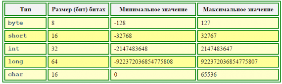
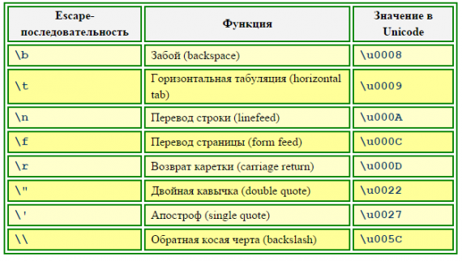
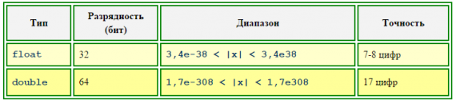

Примитивные типы Java
Как уже говорилось, в Java определены следующие примитивные типы:
За оператором объявления примитивной переменной может следовать оператор инициализации "=", с помощью которого созданной переменной присваивается начальное значение.
1. Целые типы переменных
Целые типы различаются по размеру отведенной для них памяти. Характеристики целочисленных типов приведены в табл. 1.1.
Табл. 1.1. Характеристики целочисленных типов Java

Как видно из приведенной таблицы, целые переменные, за исключением типа char, считаются в языке Java переменными со знаком.
Целочисленные константы могут задаваться в программе одним из трех способов: в виде десятичных, шестнадцатеричных и восьмеричных значений. По умолчанию все числа интерпретируются как десятичныеи относятся к типу int. Явно указать принадлежность к типу long можно, добавив в конце числа букву «l»или букву «L».
Шестнадцатеричное значение задается с помощью символов «0x» или «0X», за которым значение числа (цифры 0-9 и буквы A-F или a-f), например: 0x7FFF.
Число в восьмеричной записи должно начинаться с нуля, за которым следует одна или несколько восьмеричных цифр, например 077777.
Восьмеричные и шестнадцатеричные числа могут быть как положительными, так и отрицательными и изменяются в тех же диапазонах, что и числа в десятичном представлении (например, шестнадцатеричные числа типа byte имеют максимальное значение 0x7F и минимальное значение -0x80, а восьмеричные – соответственно 177 и — 200)
Примеры объявления целых переменных:
int x = 0;
long i, j, k;
byte a1 = 0xF1, a2 = 0x07;
short r1 = 017;
Символы в Java определяются с помощью ключевого слова char и реализованы с использованием стандарта Unicode. Можно задать константу-символ в программе или как обычный символ. Символьное значение должны быть заключено в пару одиночных апострофов, например
char symbol='f';
Другой способ записи символов: пара символов "\u", за которой следует четырехзначное шестнадцатеричное число (в диапазоне от 0000 до FFFF), представляющее собой код символа в Unicode, например
char symbol = '\u0042';
Некоторые символы, отсутствующие на клавиатуре, можно задавать с помощью так называемых escape-последовательностей, содержащих символ "\", за которым следует буквенный символ, идентифицирующий escape-последовательность, как показано в табл. 1.2.
Табл. 1.2. Escape-последовательности, используемые в языке Java

2. Вещественные типы переменных
Язык Java поддерживает числа и переменные с плавающей точкой обычной и двойной разрядности – типы float и double.
Для чисел с плавающей точкой нужно указывает целую и дробную часть, разделенные точкой, например 4.6или 7.0. Для больших чисел можно использовать экспоненциальную форму записи (для отделения мантиссы от порядка используется символ «e» или символ «E»), например, число -3,58×107 записывается как –3.58E7, а число 73,675×10-15 – как 73.675e-15.
Характеристики вещественных типов Java представлены в табл. 2.1.
Табл. 2.1. Характеристики вещественных типов Java

Переменные с плавающей точкой могут хранить не только численные значения, но и любой из особо определенных флагов (состоянии): отрицательная бесконечность, отрицательный нуль, положительная бесконечность, положительный нуль и «отсутствие числа» (not-a-number, NaN).
Все константы с плавающей точкой подразумеваются принадлежащими к типу double. Чтобы задать число типа float, необходимо добавить в его конец символ «f» или символ «F».
Примеры объявления переменных с плавающей точкой:
float x1 = 3.5f, x2 = 3.7E6f, x3 = -1.8E-7f;
double z = 1.0;
3. Булевский тип переменных
Переменные булевского типа (логические переменные) могут принимать одно из двух значений: «истина» или «ложь» и используются в языках программирования в операциях отношения (сравнения) и логических операциях. Так, результатом сравнения
5 > 3
будет «истина», а результатом сравнения
8 < 1
будет «ложь».
В отличие от C, где результату «ложь» сопоставлено целое значение типа int, равное 0, а результату «истина» – ненулевое значение типа int, и, соответственно, результатам сравнения присваивается целое значение (обычно 0 или 1), в Java для булевских переменных введен свой, отдельный тип данных.
Переменные булевского типа в Java задаются с помощью ключевого слова boolean и могут иметь лишь одно из двух значений: true или false, например
boolean switch = true;